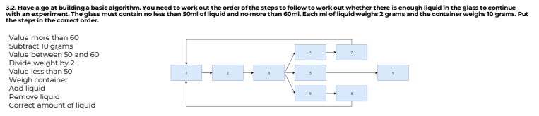

Inspired to improve this idea in the document:
Intended to be a simple game to teach algorithmic thinking.
Inspired by the concept of a surgical robot.
The game concept could be to perform simplified knee surgery - basketball was quicker for me to prototype.
To reinforce algorithmic thinking, player could be required to queue up commands, rather than activate them immediately.
This is very very simple and messy prototype to sketch out an idea, thrown together in two days. Code would be thrown out and development started from scratch with a more refined design and improved graphics.
Try to sink a basket!